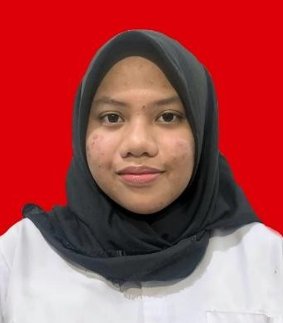

Lulusan dari SMA Negeri 10 Samarinda, jurusan MIPA. Kini menjadi mahasiswa aktif di jurusan Sistem Informasi, Telkom University Jakarta. Saya memiliki minat pada desain ilustrasi digital dan penulisan kreatif. Berpengalaman dalam kepanitiaan sekolah khususnya dalam bidang dekorasi dan konten digital, serta dikenal sebagai pribadi yang adaptif dan mampu bekerja sama dalam tim.